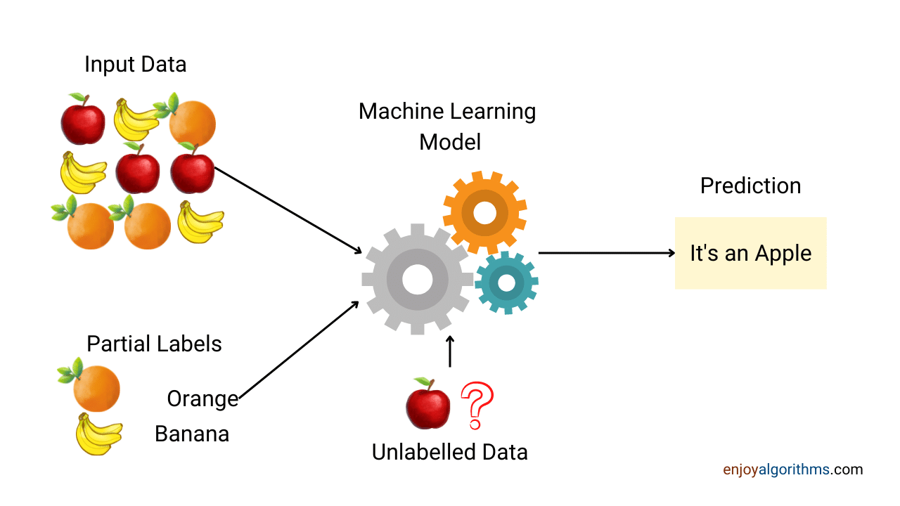
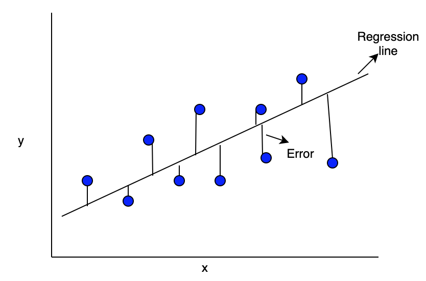
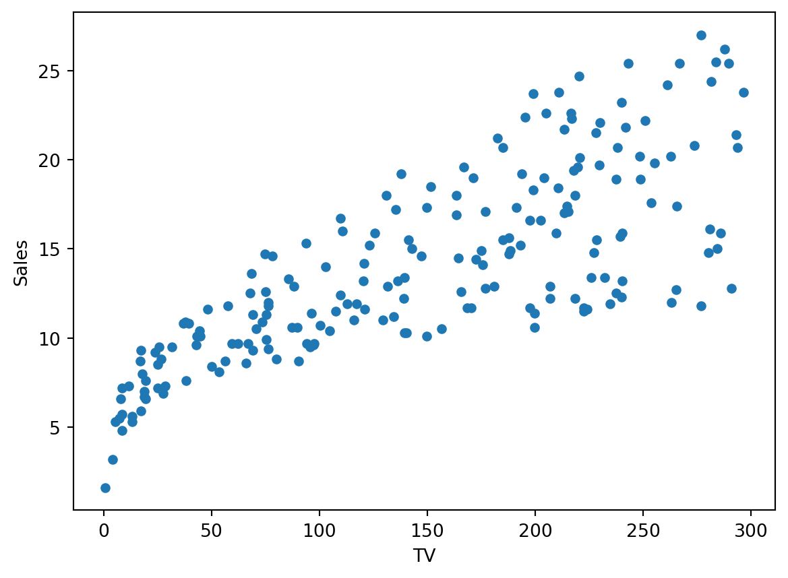
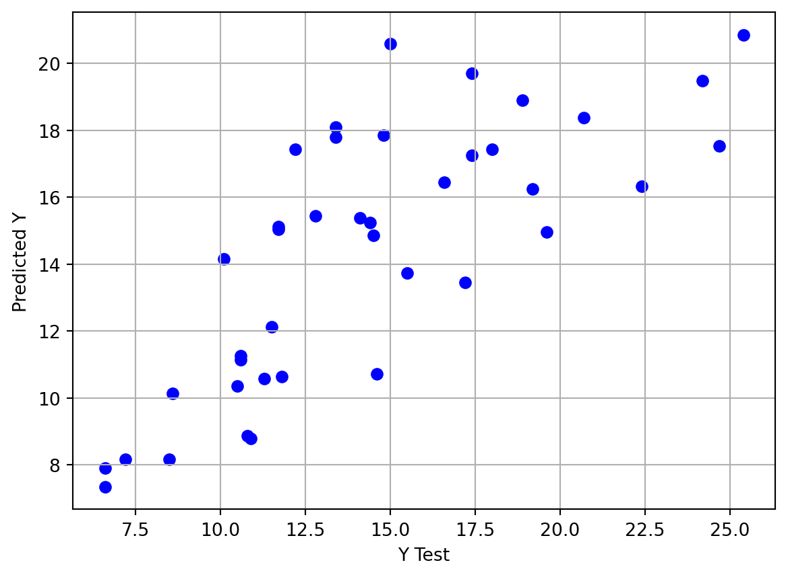

Supervised learning is a category of machine learning in which an algorithm is trained using a labeled dataset, consisting of input-output pairs or examples. During the training process, the algorithm aims to grasp a mapping from input data to the associated output or target variable. This enables the algorithm to predict or classify new, unseen data by applying the patterns it has learned from the labeled training data. Supervised learning finds application across diverse fields such as natural language processing, computer vision, recommendation systems, and healthcare. It addresses a variety of problems by leveraging labeled data to understand the relationship between input and output variables.

Supervised Learning
One of the most commonly used kinds of supervised learnings is Regression. In regression tasks, the goal is to predict a continuous numerical value. For instance, predicting the price of a house based on its features like size, number of bedrooms, and location is a regression problem.
First, let us look at what LINEAR and NONLINEAR regression is.
Linear regression is a statistical method used for modeling the relationship between a dependent variable and one or more independent variables by fitting a linear equation to the observed data. The general form of a simple linear regression model, with one independent variable, is:
\(y=W.X + B\)
Nonlinear regression is a type of statistical modeling that describes the relationship between a dependent variable and one or more independent variables when this relationship is not linear. In contrast to linear regression, where the relationship is modeled as a linear equation, nonlinear regression allows for more complex and flexible modeling of relationships that may exhibit curvature, exponential growth, logarithmic patterns, or other nonlinear behaviors. Nonlinear regression models can take various forms depending on the specific functional relationship being modeled. Some common examples include polynomial regression, exponential regression, logarithmic regression, power-law regression, and sigmoidal (S-shaped curve) regression.

Linear Regression
In this post, let’s dive deeper into how Linear Regression works.
Linear Regression
Linear regression is a statistical method used for modeling the relationship between a dependent variable and one or more independent variables by fitting a linear equation to the observed data. In a simple linear regression model, there is one dependent variable and one independent variable, and the relationship is represented by the equation:
\(y=β0+β1x+εy\)
The goal of linear regression is to estimate the values of the coefficients (β0,β1,…,βn_0, _1, , _nβ0,β1,…,βn) that minimize the sum of squared differences between the observed values of the dependent variable and the values predicted by the linear equation. This process is typically done using the method of least squares.
Linear regression is widely used for various purposes, including predicting values, understanding the strength and direction of relationships between variables, and assessing the impact of changes in independent variables on the dependent variable. It assumes a linear relationship between the variables and is sensitive to outliers that can significantly impact the model’s performance.
Let us take an example of how Linear Regression works. In this example, our task involves predicting the TV sales based on the marketing budget.
To begin with, let us import the necessary Python modules and load the dataset.
import warningswarnings.filterwarnings('ignore')import numpy as npimport pandas as pdimport matplotlib.pyplot as pltimport seaborn as snsads = pd.read_csv('tvmarketing.csv')ads.head()
TV
Sales
0
230.1
22.1
1
44.5
10.4
2
17.2
9.3
3
151.5
18.5
4
180.8
12.9
Before we train our model, we need to preprocess the data. Let us study the features.
ads.describe()
TV
Sales
count
200.000000
200.000000
mean
147.042500
14.022500
std
85.854236
5.217457
min
0.700000
1.600000
25%
74.375000
10.375000
50%
149.750000
12.900000
75%
218.825000
17.400000
max
296.400000
27.000000
Visualization
Let’s visualize how the TV prices and sales and related using scatter plot.
ads.plot(x='TV',y='Sales',kind='scatter')
<Axes: xlabel='TV', ylabel='Sales'>

Building the Model
First lets divide our data into train and test sets.
X = ads['TV']y = ads['Sales']from sklearn.model_selection import train_test_splitX_train, X_test, y_train, y_test = train_test_split(X, y, train_size=0.8)
Since we just have one feature, let us increase the dimension by one.
from sklearn.linear_model import LinearRegressionlr = LinearRegression()lr.fit(X_train, y_train)
LinearRegression()
In a Jupyter environment, please rerun this cell to show the HTML representation or trust the notebook. On GitHub, the HTML representation is unable to render, please try loading this page with nbviewer.org.
LinearRegression()
Once the model is trained, now use it for predictions.
import matplotlib.pyplot as pltplt.scatter(y_test,y_pred,c='blue')plt.xlabel('Y Test')plt.ylabel('Predicted Y')plt.grid()

NonLinear Regression
Nonlinear regression involves identifying a nonlinear model describing the connection between the dependent variable and a group of independent variables. In contrast to conventional linear regression, which is confined to assessing linear models, nonlinear regression can analyze models with diverse relationships between independent and dependent variables. Achieving this requires iterative estimation algorithms. It’s worth noting that for uncomplicated polynomial models like \(Y = A + BX^2\), the process becomes simpler. By introducing \(W = X^2\), a straightforward linear model, \(Y = A + BW\), is formed. This can be estimated using conventional techniques such as the Linear Regression procedure.